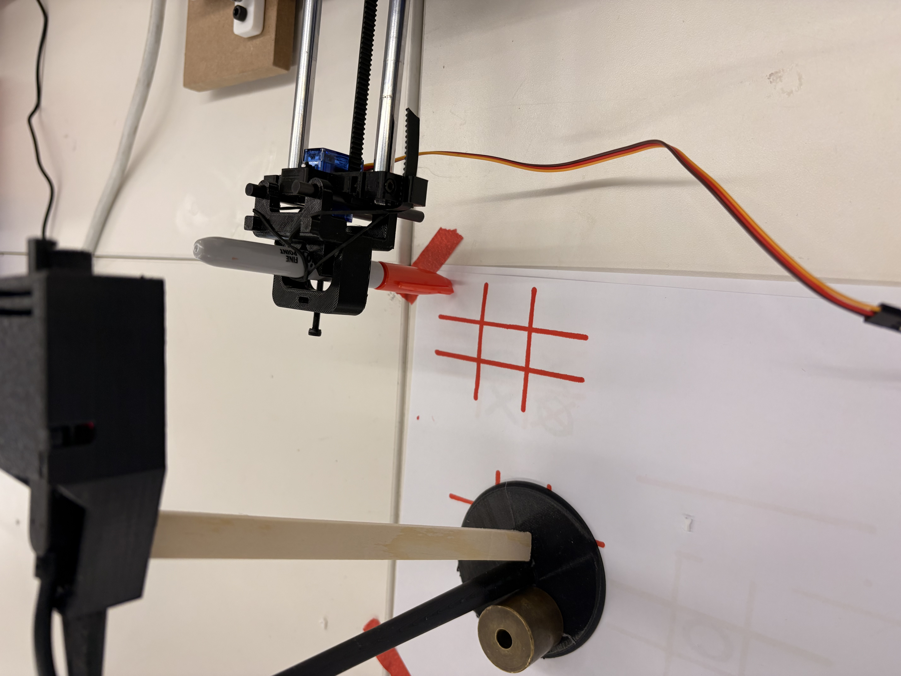

Overview
Our goal for this project was to make a Tic-Tac-Toe Drawing machine that is able to play with you and take turn putting X's and O's on the sheet. The goal was for the machine to use computer vision and analyze snapshots ofthe board to determine where the other player placed their O and where it should place its next move.


Mockups & Sketches
Early sketches, diagrams, or CAD screenshots. Annotate what each shows.
Construction
To construct our drawing machine we followed the build kit directions exactly, and our end effector was simply a marker. Where our product required additional design, was modifying an ESP32 CAM holder to position the camera directly above the piece of paper to fully capture the image. Which can also be seen in the image above.
A big issue that we ran into was with the computer vision and getting the python code to actually detect the changes on the board. It was okay at detecting X's and not good at detecting O's at all. Another more minor issue was that orignally our camera talked to python code over a server, and the python communicated with the ESP32 (which controlled the motors) over serial. This caused issues with serial monitor overloads and brownouts. We then switched to have python communicated with ESP32 over server as well, and connected the ESP32 to external power source (instead of laptop).
Code
.
Notes
Challenges; Next Steps
A big issue that we ran into was getting the python code to actually detect the changes on the board. It was okay at detecting X's and not good at detecting O's at all.
What comes next — improvements, experiments, v2 ideas?